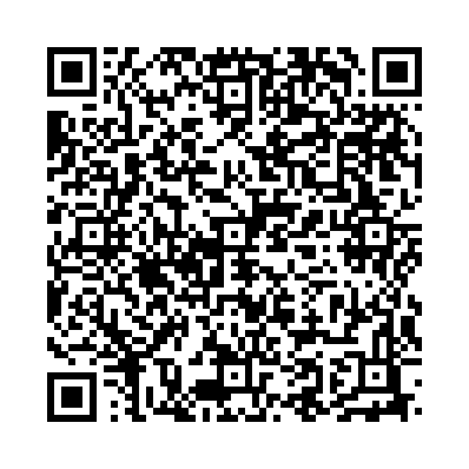

助動詞 Shall は、「～しましょう」という意味で話し手の意思を表したり、提案や意見を求める際に使います。現代英語では主に「I」と「We」を主語とする場合に使用されます。
例文：
以下の単語を並び替えて正しい文を作成しましょう。（和訳を参考にしてください）

問題1: (we / go / walk / shall / a / for / ?) - 散歩に行きましょうか？
解答: Shall we go for a walk?
解説: 疑問文では「Shall + 主語 + 動詞の原形」を使います。
問題2: (shall / I / meeting / start / the / 10 a.m. / at) - 私は10時に会議を始めるつもりです。
解答: I shall start the meeting at 10 a.m.
解説: 肯定文では「主語 + shall + 動詞の原形」を使います。
問題3: (shall / not / we / allow / behavior / this) - 私たちはこの行為を許しません。
解答: We shall not allow this behavior.
解説: 否定文では「主語 + shall not + 動詞の原形」を使います。
問題4: (we / plan / shall / weekend / the) - 私たちはその週末の計画を立てましょう。
解答: We shall plan the weekend.
解説: 提案として「Shall + 主語 + 動詞の原形」を使います。
問題5: (we / shan't / make / same / the / mistake) - 私たちは同じ間違いを犯さないでしょう。
解答: We shan't make the same mistake.
解説: 「shall not」の短縮形「shan't」を使用しています。